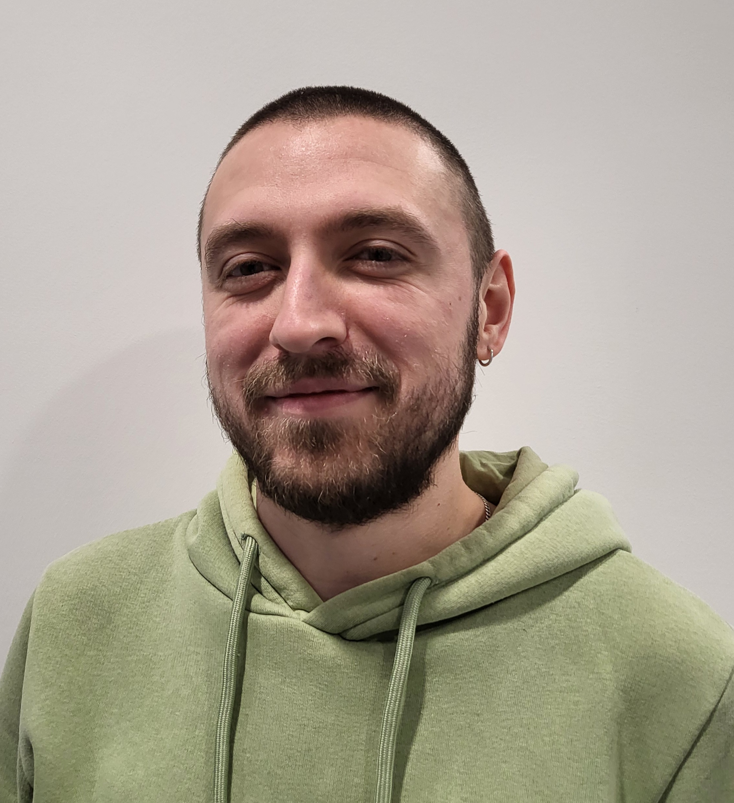

Lorin Cristian Rusu

Profile
Passionate young engineer dedicated to delivering high quality solutions that satisfy customer needs. Creative and detail oriented, has a hands-on approach and aims towards continuous improvement and work efficiency.
Employment history
Medior development engineer at Bosch Thermotechniek, Deventer, The Netherlands
October 2022 - present
- Responsible for development of thermoacoustic dampening solution for upcoming heat cell model.
Test engineer at Firestone Industrial Products Europe, Arnhem, The Netherlands
May 2021 - October 2022
- Responsible for testing activities related to a development project, including planning, performing tests, producing test reports and presenting results to the customer.
- Responsible for on-boarding of new laboratory team members, by providing training and assistance in operating test equipment.
- Part of the team responsible for developing internal Lessons Learned and Knowledge Sharing process.
Laboratory technician at Firestone Industrial Products Europe, Arnhem, The Netherlands
May 2019 — May 2021
- Responsible for the implementation of the Automotive Air spring Prototype assembly line by developing tools (hardware and software), processes and working standards.
- Part of the team responsible for testing of automotive and commercial vehicle air springs for European OE customers.
- Part of the team responsible for providing on-site assistance during tuning sessions for Automotive customers.
Junior application engineer at VB Airsuspension, Varsseveld, The Netherlands
October 2018 — May 2019
- Assisted senior engineers in the development of air spring suspension kits for light commercial vehicles by creating 3D models and 2D drawings in accordance with internal working standards.
Education
Automotive engineering, HAN University of Applied Sciences, Arnhem, The Netherlands
August 2014 — July 2018
- Followed the "Development" track, which focused on mechanical design, material science and finite element analysis.
- Minor in Lightweight Structural Design with courses on mechanics of composite materials, finite element theory and Abaqus CAE.
Additional information